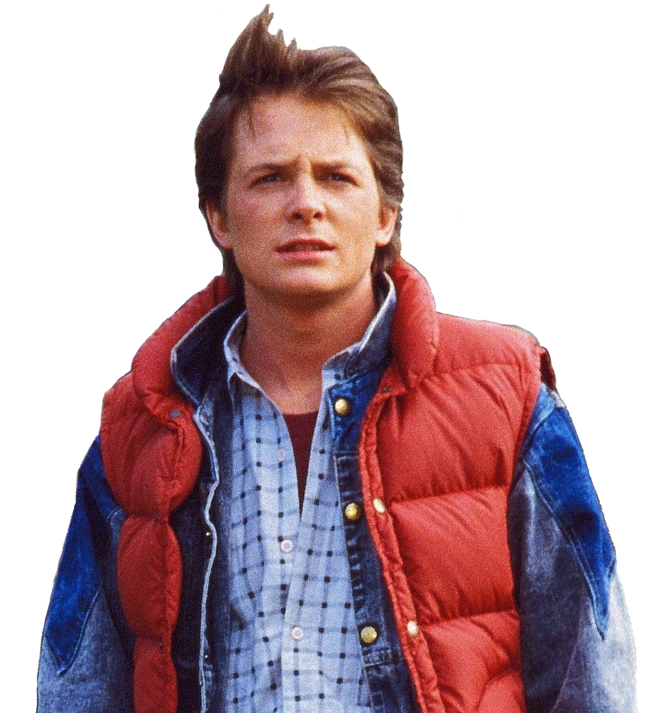
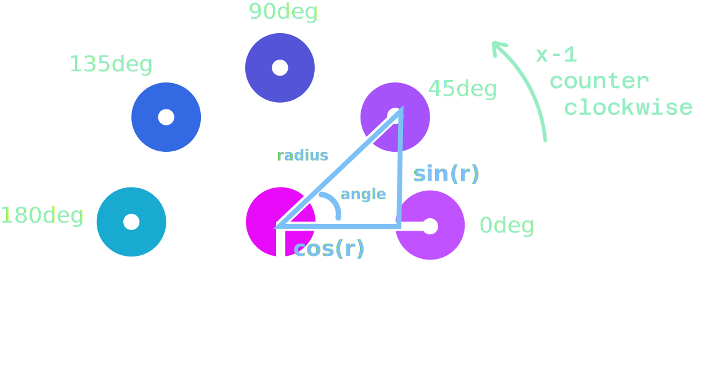

I ♥ CSS
CSS and HTML are getting much more powerful

"I'm from the future"
⚠️ NEW STUFF ⚠️
"Roads? Where we're going, we don't need roads."
A note on browser support:
Standards-track APIs
<select name="version-select" id="version-select"
<button>
<selectedcontent></selectedcontent>
</button>
<option value="core">
<div class="icon">
<span class="material-symbols">hub</span>
</div>
<div class="meta">
<div class="title">UnAI Core</div>
<div class="subtitle">Balanced speed...</div>
</div>
</option>
<option value="max">
...<div class="comments">
<a interestfor="commenters" href="#">
24 comments
</a>
</div>
<div id="commenters" popover="hint">
<ul>
<li>Jenny Smith</li>
<li>...</li>
</ul>
</div><div class="star-rating" data-rating="1.8">
<figure></figure>
</div>
.star-rating {
--percent-fill: calc(attr(data-rating type(<number>)) * 20%);
figure {
/* hard breakpoint gradient background */
background:
linear-gradient(to right,
gold var(--percent-fill),
transparent var(--percent-fill));
/* star mask */
mask-image: url('data:image/svg+xml,...');
}
&::after {
content: attr(data-rating);
}
}The most exciting things happening in web development right now are happening in CSS & HTML.
The best way to level up your web development skillset is to know what's possbile with modern UI capabilities.
Why care about CSS & UI?
- 🧮 Separate logic and styling
- 🗑️ Reduce 3P dependancies
- 🏗️ Reduce maintenance costs & complexity
- ⌨️ Make it easier to build accessible interfaces
- 🚀 Better performance off the main thread
- 🧖🏻♂️ Build faster, make your life easier
Built-in syntax highlighting
- No heavy libraries
- No added span tags
- Supports textarea & dynamic editing
Let's go on an adventure...

Recipe:
- Customizable select menu
- Scroll-driven animation
- CSS trigonometric functions
- Registered custom properties
- Bonus: CSS carousel markers
Customizable select
select,
select::picker(select) {
appearance: base-select;
}<select name="version-select" id="version-select"
<button>
<selectedcontent></selectedcontent>
</button>
<option value="core">
<div class="icon">
<span class="material-symbols">hub</span>
</div>
<div class="meta">
<div class="title">UnAI Core</div>
<div class="subtitle">Balanced speed...</div>
</div>
</option>
<option value="max">
...selectedcontent .subtitle,
selectedcontent .icon {
display: none;
}

--rad: calc(var(--btn-size) + var(--gap));
background-color: var(--bg);
transform:
translateX(calc(cos(var(--a)) * var(--rad)))
translateY(calc(sin(var(--a) * -1) * var(--rad)));
opacity: 0;
transition: all 0.3s var(--delay) ease;
.item:nth-child(1) {
--bg: pink;
--a: 0deg;
--delay: 0s;
}
.item:nth-child(2) {
--bg: thistle;
--a: 45deg;
--delay: 0.1s;
}
.item:nth-child(3) {
--bg: paleturquoise;
--a: 90deg;
--delay: 0.2s;
}
...
--rad: calc(var(--btn-size) + var(--gap));
--a: calc((sibling-index() - 1) * 45deg);
--delay: calc((sibling-index() - 1) * 0.1s);
background-color: var(--bg);
transform:
translateX(calc(cos(var(--a)) * var(--rad)))
translateY(calc(sin(var(--a) * -1) * var(--rad)));
opacity: 0;
transition: all 0.3s var(--delay) ease;
Scroll-driven animations
@keyframes appear {
from {
opacity: 0;
transform: translate(0px, 50px);
}
to {
opacity: 1;
transform: translate(0px, 0px);
}
}
li {
animation: appear linear both;
animation-timeline: view();
animation-range: entry 0 cover 25%;
}
Progressive enhancement 💜💜💜
@supports (animation-timeline: scroll()) {
html {
scroll-timeline-name: --root-scroll;
}
@keyframes fade-in {
from {
opacity: 0;
display: none;
}
to {
opacity: 1;
display: block;
}
}
a {
animation: fade-in auto linear both;
animation-timeline: --root-scroll;
animation-range: 20% 30%;
}
}Recipe:
- Anchor positioning
- Repositioning logic
- Popover=hint
- Interest invokers
<button popovertarget="my-tooltip">
<p>?</p>
</button>
<div id="my-tooltip" class="tooltip" popover>
<p>I am a tooltip with more information.<p>
</div>
#my-tooltip {
inset: auto;
position-area: top;
position-try: flip-block;
}
TODO: Basic popover demo
popover=auto |
popover=manual |
popover=hint |
|
|---|---|---|---|
Light dismiss (via click-away or esc key) |
✅ Yes | 🚫 No | ✅ Yes |
Closes other popover=auto elements when opened |
✅ Yes | 🚫 No | 🚫 No |
Closes other popover=hint elements when opened |
✅ Yes | 🚫 No | ✅ Yes |
Closes other popover=manual elements when opened |
🚫 No | 🚫 No | 🚫 No |
Can open and close popover with JS (showPopover() or hidePopover()) |
✅ Yes | ✅ Yes | ✅ Yes |
| Default focus management for next tab stop | ✅ Yes | ✅ Yes | ✅ Yes |
Can hide or toggle with popovertargetaction |
✅ Yes | ✅ Yes | ✅ Yes |
Can open within parent popover to keep parent open |
✅ Yes | ✅ Yes | ✅ Yes |
🌶️ Interest Invokers 🌶️
<p>Hi! My name is <a href="https://una.im"
interestfor="--una">Una Kravets</a>.
I'm a CSS and UI enthusiast...</p>
<div id="--una" popover="hint">
<header>
<picture>
<img src="una.jpg" alt="Una">
</picture>
<div>
<h2>una</h2>
<a href="https://una.im">una.im</a>
</div>
<button>Follow</button>
</header>
</div>
[interestfor] {
interest-delay-start: 0.3s;
}
.parent:has(:interest-source) [interestfor] {
interest-delay-start: 0s;
}
Protip from Emil Kowalski —>
[interestfor] Polyfill
import interestfor from "https://esm.sh/interestfor";
[interestfor] {
/* for polyfill this must be a custom property */
--interest-delay-start: 0.1s;
--interest-delay-end: 0.1s;
interest-delay-start: var(--interest-delay-start);
interest-delay-end: var(--interest-delay-end);
}Recipe:
- Scroll-snapping
- Scroll buttons
- Scroll markers
- Scroll-state queries
- Anchor positioning
CSS Carousels are just fancy scrollers.
<ul class="carousel">
<li>...</li>
<li>...</li>
<li>...</li>
</ul>
.carousel {
overflow-x: auto;
scroll-snap-type: x mandatory;
scroll-behavior: smooth;
}
Now with buttons!
.carousel {
&::scroll-button(*) {
position: fixed;
position-anchor: --carousel;
font-family: "Material Symbols Outlined";
}
&::scroll-button(right) {
position-area: inline-end center;
content: "arrow_forward_ios" / "Scroll Right";
}
&::scroll-button(left) {
position-area: inline-start center;
content: "arrow_back_ios" / "Scroll Left";
}
}
And markers!
.carousel {
scroll-marker-group: after;
&::scroll-marker-group {
position: fixed;
position-anchor: --carousel;
display: grid;
...
}
::scroll-marker {
content: counter(day-num);
aspect-ratio: 1 / 1;
...
}
::scroll-marker:target-current {
transform: translateY(-0.5rem);
}
li {
container-type: scroll-state;
scroll-snap-align: center;
div {
scale: 0.8;
transition: scale 0.3s ease;
@container scroll-state(snapped: x) {
scale: 1;
}
}
}
.day-card {
& .meta {
@container scroll-state(snapped: x) {
transform: translateY(0);
}
}
}
::scroll-marker:target-current {
anchor-name: --active-target;
}
.indicator {
position-anchor: --active-target;
inset: anchor(inside);
margin-top: anchor-size();
transition: inset 0.5s linear;
}
.follower {
/* anchor the follower element */
position: fixed;
position-anchor: --hovered;
}
.possible-anchor:hover {
/* update the active anchor */
anchor-name: --hovered;
}
Multi-anchors!
1. Dynamic re-targetting for "bubble"
2. Ephemeral tooltips using:
position-area
position-try-fallbacks
popover=hint
[interestfor]
(Touch of JS to preserve active state since we're
re-anchoring with :hover)
Bring your own scroll markers with scroll-target-group: auto
<ul class="parent">
<li><a href="#intro">Introduction</a></li>
<li><a href="#one">Section one</a></li>
</ul>
<div id="intro">Introduction</div>
<div id="one">Section one</div>
.parent {
scroll-target-group: auto;
}
:target-current {
/* styles for active anchor */
}
A little smooth scroll never hurt anyone
html {
scroll-behavior: smooth;
}
Anyway, there's a lot of new CSS stuff
if()@function () {}shape()Range container queriesVIEW TRANSITIONS
/* Show only one of two */
#feedback-form, .open #feedback-btn {
display: none;
}
/* Give both the same v-t-name, because */
/* we want to morph the one into the other */
#feedback-form, #feedback-btn {
view-transition-name: --feedback;
}
/* Capture the parent as a separate layer, */
/* so it animates too */
#parent {
view-transition-name: --feedback-parent;
}
...This entire slide framework is built with Zero JavaScript
<style contenteditable>font-family: 'FontWithASyntaxHighlighter'::scroll-button(*)::scroll-marker&:target-currentscroll-behavior: smooth@container scroll-state(snapped: x) {}sibling-index()
Do I need to know all the things?
Reach for native-first
universal APIs
No dependancies
The best way to level up your web development skillset is to get good at CSS and HTML
Leverage the power of the browser
Write once, works everywhere.
Raise your expectations for the web platform.